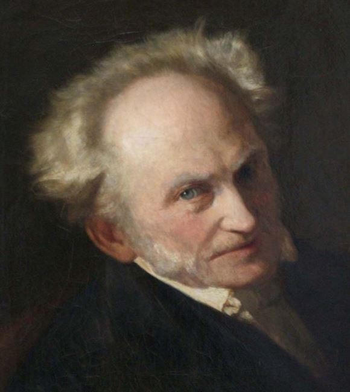

Depuis que le monde est monde, l’idée est un virus, l’homme une bactérie : les conceptions freinent les actions, bien que l’être humain se présente comme le plus vorace des vivants. In fine, l’animal-homme a estimé qu’il pouvait mieux avancer en pensant. C’est ainsi que les réflexions devaient à jamais dicter leurs lois aux émotions. Seulement, les idéologies alimentent l’enthousiasme, qui lui se mute souvent en fanatisme. Parce que la dictature des émotions constitue clairement une idéologie : il faut se plaindre et hurler à grand cris, non seulement pour être écouté, mais aussi pour être craint et respecté. En résumé, dans une époque où la moraline dégouline de tout son poids et où les réclamations font la loi, le maître Schopenhauer n’apparait plus comme un recours, mais véritablement comme un anticorps.
Arthur Schopenhauer (1788-1860) est le philosophe d’hier et de demain à bien des égards. Le jeune Arthur, fils d’un père matérialiste et dépressif puis d’une mère bourgeoise et intellectuelle, connait le voyage, la solitude et le goût des études. Apprenant à lire et à parler l’anglais et le français, il s’ouvre rapidement à d’autres cultures que la sienne. Devant une globalisation industrielle rampante, il comprend que la vie a un sens cosmologique avant d’être politique. Entre un père qui l’hystérisait et une mère qui le dédaignait, il dut sans cesse se reconstruire, surtout par le travail intellectuel : il aurait dû être commerçant, il finit mal pensant.
Schopenhauer, c’est le goût de la survie et de la fureur. Une existence perpétuellement déchirée entre la souffrance intérieure et l’ennui extérieur. Conceptuellement, ce penseur anéantit la frontière entre l’intériorité psychique et l’extériorité physique. De plus, il subit le règne de la publicité face à son meilleur ennemi : Georg Wilhelm Friedrich Hegel (1770-1831). Battu en brèche par l’immense succès de ce dernier dans le domaine académique, il n’a d’autre choix que d’écrire des pages entières sans savoir si cela peut satisfaire. Malgré tout, il réussit à produire son œuvre majeure : Le monde comme volonté et comme représentation1.
Deux thèses fondamentales pour révéler deux éléments d’une seule et même réalité : alors qu’il ne peut y avoir une quelconque vitalité sans volonté, la conception ne peut voir le jour sans imagination. Dès le §1 du Monde, il affirme : « Le monde est ma représentation […] Le monde est ma volonté »2. En somme, la vie se rêve bien que la réalité persévère. Puis, si le vouloir-vivre persiste et signe, l’homme et la bête se différencient à l’aune d’un point accidentel : la réflexion. « L’animal sent et perçoit, l’homme pense et sait ; tous les deux ils veulent »3. Irrémédiablement, l’homme réfléchit parce qu’il ne veut plus faire confiance à son instinct primaire. Seulement, le désir avec son lot d’illusions se manifeste pathétiquement comme instinct de consommation. En définitive, Schopenhauer est un anthropologue essentiel : il faut s’éliminer pour ne pas éliminer. Cependant, le suicide individuel est une idée avariée : si chaque âme passe de corps en corps selon le « cycle des réincarnations » (le samsara en pali), se tuer ne change rien à son éternelle substantialité. Ainsi, dans ce kosmos, il faut vouloir pour pouvoir.
Mais la morale de notre temps nous promet un monde sans souffrance, et la technologie de demain un monde sans ennui : grandeur et décadence. Schopenhauer fut le premier à avoir compris, avant Nietzsche, que la morale inspirée des Lumières – en premier lieu, celle de Kant – s’était agglutinée à la politique, voire au juridique : la loi pouvait faire la morale. Voilà pourquoi le moralisateur des places publiques est à même d’ignorer qu’« il est plus facile de prêcher la morale que de la fonder »4. Toute vérité devrait donc s’identifier nécessairement au Bien, si ce n’est au Beau. Conséquence : l’argument qui fait mal n’est pas seulement le Mal, mais également l’horriblement laid. Alors, la parole acerbe et l’écriture acide n’ont plus le droit de cité dans nos contrées lénifiées.
Par ailleurs, Schopenhauer serait incompris, de nos jours, au niveau de son antijudaïsme forcené, voire de son antisémitisme larvé. Bien évidemment, il s’agit d’une époque à analyser et aucunement à regretter. Car, sans passion ni moralité, il convient simplement de penser : le judaïsme peut se concevoir comme un réalisme sur le plan gnoséologique, et comme un matérialisme sur le plan ontologique. Pour les Juifs, le strict respect des règles de vie et de liturgie purifie davantage l’âme que toute méditation métaphysique5. En un mot, le judaïsme – comme l’islam – est une diététique. A l’exact inverse, le bouddhisme est idéaliste et spiritualiste : le moi subsiste en-deçà des âges du monde. Ou quand le thé n’a pas besoin de tasse pour subsister… Triomphe de l’immanence sur la transcendance, autrement dit celle du pessimisme sur l’optimisme.
De fait, Schopenhauer est le meilleur représentant du courant orientaliste de son temps, non sans excès ni outrance. Cependant, la fascination des élites allemandes pour l’Asie a allumé incontestablement une flamme permettant à l’idéologie nazie de s’embraser. Pour autant, le bouddhisme concevant que « toute vie est essentiellement souffrance » (ou « combien la souffrance est le fond de toute vie »6) enseigne la compassion non pas à l’endroit de l’homme, mais à l’endroit de tous les vivants. Fondamentalement, le bouddhisme n’est pas un humanisme. En outre, Schopenhauer n’a eu de cesse de rendre hommage au biologisme d’Aristote7. Le mot « race » n’était point, pour lui, un gros mot car il signifiait l’espèce ; ce qui fut d’usage au XIXème siècle. De son point de vue, le mariage, même bourgeois, avait un sens tant biologique qu’ethnologique : « Les mariages d’amour sont conclus dans l’intérêt de l’espèce, et non des individus »8. En bon Asiatique d’esprit, Schopenhauer comprit que le mariage était d’angoisse avant d’être d’amour : il ne saurait être spécifiquement multiculturaliste. En effet, l’instinct surpasse tragiquement les sentiments.
En matière d’immigration, Schopenhauer aurait été tout aussi radical. Sa méthodologie repose sur le principe de raison suffisante, principe logique millénaire remontant à Platon et à Aristote selon lequel rien n’est sans raison d’être. Il y consacre sa thèse de doctorat, dont d’ailleurs la première proposition fait mouche : « On doit satisfaire à deux lois, celle de l’homogénéité et celle de la spécification, dans la même mesure et non à l’une au détriment de l’autre »9. Sa prescription concernant le problème du maintien des civilisations se résume ainsi : ni d’homogénéisation absolue ni de spécification absolue.
En somme, notre globalisation économico-financière, doublée d’une globalisation ethnico-culturelle avec son cortège de droits à la différence, lui aurait donné la nausée. Assurément, son art de la polémique nourri par une aigreur dynamique avait de quoi défrayer la chronique. Ni vraiment réactionnaire ni véritablement identitaire, il était simplement solitaire. Il lui fallait écrire à coups de canne. Son style si proche de l’éloquence à la française était, pour lui, le seul moyen viable de redessiner sa vie : « Le style est la physionomie de l’esprit »10. Enfin, cet anticorps devait faire des petits : Emil Cioran (1911-1995) et Michel Houellebecq (né en 1956), entre autres. Mais que l’époque est triste, même si l’écriture reste ! Puisque le vouloir-vivre est condamné à résister contre vents et marées.
H.F.
NOTES ET RÉFÉRENCES
1. A. Schopenhauer, Le monde comme volonté et comme représentation, trad. par A. Burdeau, Edition revue et corrigée par R. Roos, Paris, P.U.F., coll. Quadrige, 1966.
2. Ibid., §1 , pp.25-27.
3. Ibid., §8, p.66.
4. A. Schopenhauer, Le Fondement de la morale, trad. par A. Burdeau, Paris, Librairie Générale Française, « le livre de poche-classiques de la philosophie », 1991, p.240.
5. A. Schopenhauer, Sur la religion, trad. par E. Osier, Paris, Flammarion, coll. G.F., 1996, §174, pp.92-99.
6. A. Schopenhauer, Le monde, op. cit., §56, p.393.
7. A. Schopenhauer, Correspondance complète, trad. C. Jaedicke, Paris, Editions Alive, 1978, p.335.
8. A. Schopenhauer, Le monde, op. cit., chapitre XLIV, « Métaphysique de l’amour », p.1316.
9. A. Schopenhauer, De quadruple racine du principe de la raison suffisante, trad. par F.-X. Chenet, Paris, Vrin, coll. Bibliothèque des Textes Philosophiques, 1997, §1, p.21.
10. A. Schopenhauer, Parerga & Paralipomena, trad par J.-P. Jackson, Paris, Coda et Jean-Pierre Jackson, 2005, §282, p.824.
Partager cette page